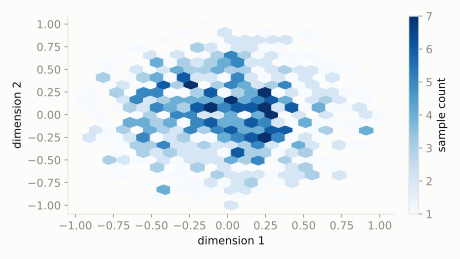

A toy compass needle mostly points north, but wobbles a little side to side and up-down instead of pointing exactly true north every time.
How much denser is the cloud of needle directions right at true north compared to a direction 90 degrees away?
scipy.stats.vonmises_fisher
The Normal distribution's equivalent for directions instead of positions: points are constrained to the surface of a sphere, clustering around a preferred direction mu, with kappa controlling how tightly (kappa=0 is uniform all over the sphere).
| parameter | default used here | meaning |
|---|---|---|
mu | [0, 0, 1] | the preferred direction (unit vector) |
kappa | 5.0 | concentration -- how tightly clustered around mu |
A toy compass needle mostly points north, but wobbles a little side to side and up-down instead of pointing exactly true north every time.
How much denser is the cloud of needle directions right at true north compared to a direction 90 degrees away?
scipy.statsimport scipy.stats as stats
import numpy as np
dist = stats.vonmises_fisher(mu=[0, 0, 1], kappa=5.0)
print('density at true north (0,0,1):', round(float(dist.pdf([0, 0, 1])), 4))
print('density 90 deg off (1,0,0):', round(float(dist.pdf([1, 0, 0])), 4))